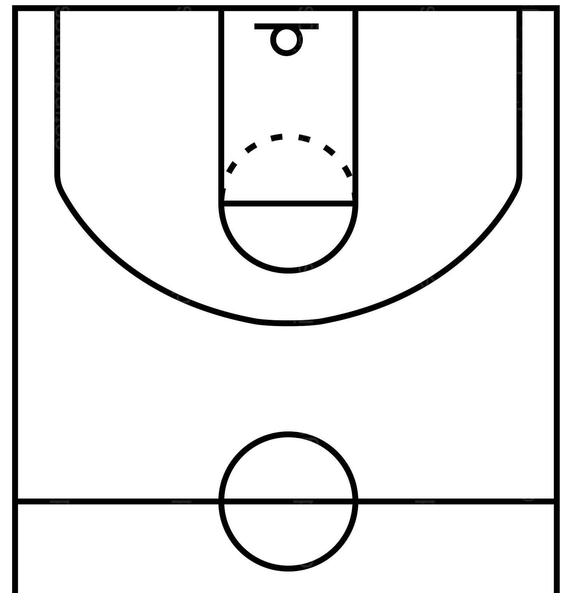

<ion-header [translucent]="true">
  <ion-toolbar>
    <ion-title>
      Basketball Trainer
    </ion-title>
  </ion-toolbar>
</ion-header>

<ion-content [fullscreen]="true">
  <ion-header collapse="condense">
    <ion-toolbar>
      <ion-title size="large">Basketball Trainer</ion-title>
    </ion-toolbar>
  </ion-header>

  <div class="shot-type-toggle">
    <ion-toggle :enable-on-off-labels name="shotType" checked="shotType === 'single'" (ionChange)="onShotTypeChange()" label-placement="start">
      Single Shot
    </ion-toggle>
  </div>

  <div class="court-container" (click)="handleCourtClick($event)">
    
    <div class="shot-marker"
         *ngFor="let shot of shots"
         [style.left.px]="shot.x"
         [style.top.px]="shot.y"
         [class.single-shot]="shot.isSingle"
         [class.multiple-shot]="!shot.isSingle"
         [style.background-color]="getShotColor(shot)"
         (click)="showTooltip(shot, $event); $event.stopPropagation()"
         (mouseenter)="showTooltip(shot, $event)"
         (mouseleave)="hideTooltip()">
    </div>
    <div class="tooltip"
         *ngIf="activeTooltip"
         [style.left.px]="tooltipPosition.x"
         [style.top.px]="tooltipPosition.y"
         (click)="$event.stopPropagation()">
      <div class="tooltip-content">
        <div *ngIf="activeTooltip.isSingle">
          <strong>{{ activeTooltip.made ? 'Made' : 'Missed' }}</strong>
          <div class="time">{{ formatTime(activeTooltip.timestamp) }}</div>
        </div>
        <div *ngIf="!activeTooltip.isSingle">
          <strong>Multiple Shots</strong>
          <div>Total Attempts: {{ getTotalAttempts(activeTooltip) }}</div>
          <div>Percentage: {{ formatPercentage(activeTooltip.percentage!) }}</div>
          <div class="time">{{ formatTime(activeTooltip.timestamp) }}</div>
        </div>
      </div>
    </div>
  </div>
</ion-content>

<ion-modal [isOpen]="isModalOpen" (didDismiss)="setOpen(false)">
  <ng-template>
    <ion-header>
      <ion-toolbar>
        <ion-title>Track Shot</ion-title>
        <ion-buttons slot="end">
          <ion-button (click)="setOpen(false)">Close</ion-button>
        </ion-buttons>
      </ion-toolbar>
    </ion-header>
    <ion-content class="ion-padding">
      <div *ngIf="shotType === 'single'" class="ion-margin-top">
        <ion-list-header>
          <ion-label>Shot Result</ion-label>
        </ion-list-header>
        <ion-button expand="block" (click)="recordShot(true)">Made</ion-button>
        <ion-button expand="block" color="danger" (click)="recordShot(false)">Missed</ion-button>
      </div>

      <div *ngIf="shotType === 'multiple'" class="ion-margin-top">
        <ion-list-header>
          <ion-label>Multiple Shots</ion-label>
        </ion-list-header>
        <ion-item>
          <ion-label position="stacked">Number of Attempts</ion-label>
          <ion-input type="number" [(ngModel)]="attempts" min="1" placeholder="Enter attempts"></ion-input>
        </ion-item>
        <ion-item>
          <ion-label position="stacked">Number Made</ion-label>
          <ion-input type="number" [(ngModel)]="made" min="0" [max]="attempts" placeholder="Enter made shots"></ion-input>
        </ion-item>
        <ion-button expand="block" (click)="recordMultipleShots()" [disabled]="!isValidMultipleShot()">Record Shots</ion-button>
      </div>
    </ion-content>
  </ng-template>
</ion-modal>
